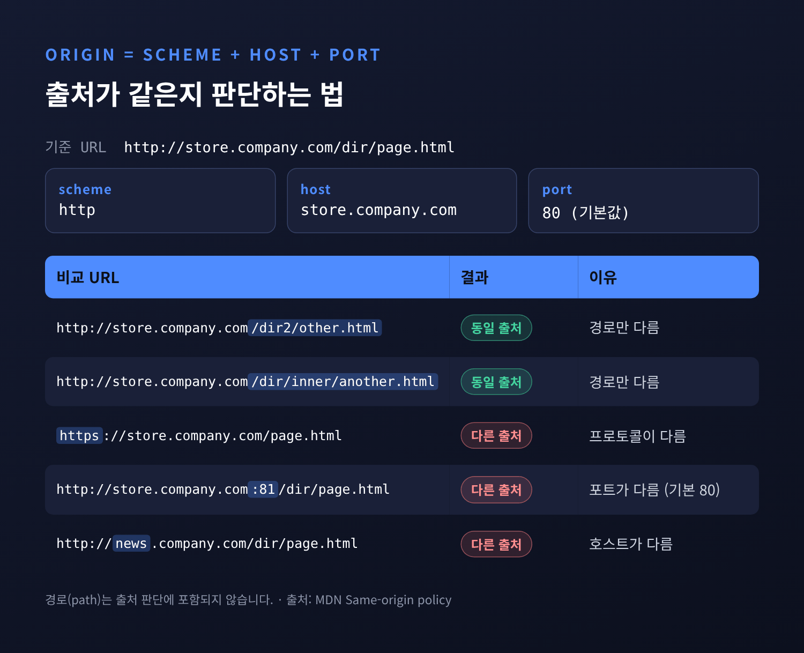
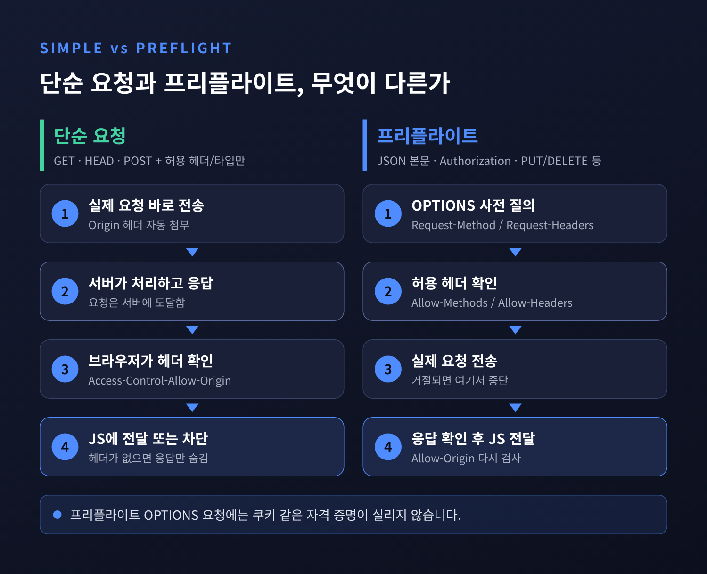
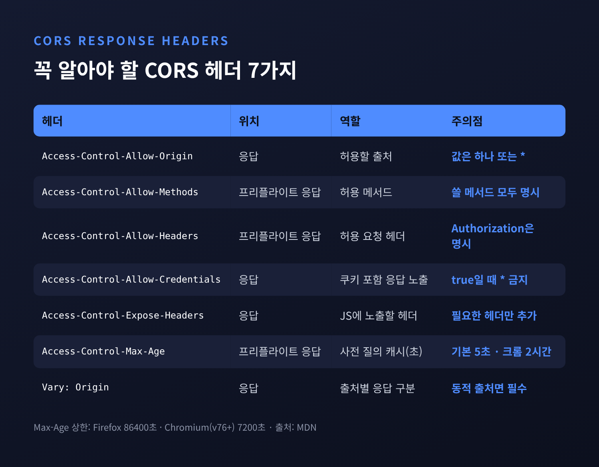
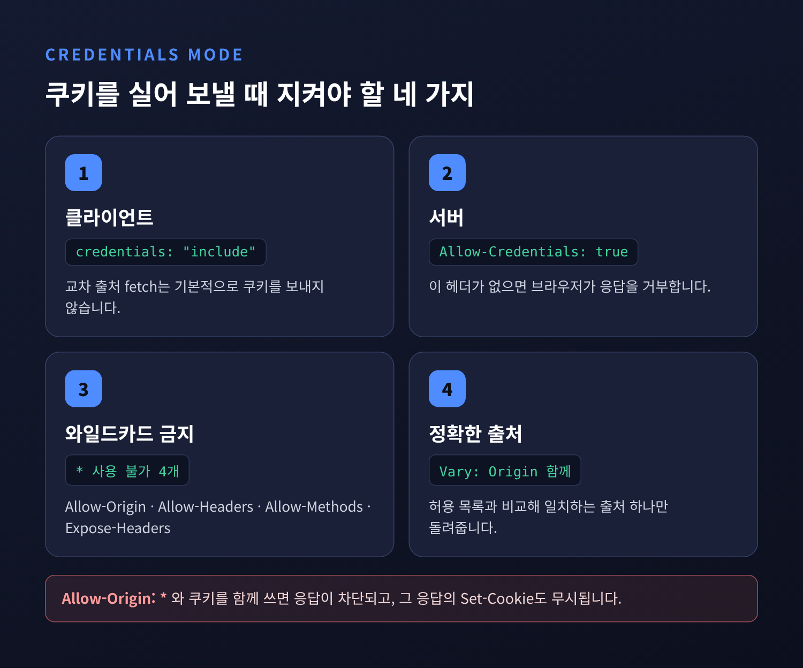
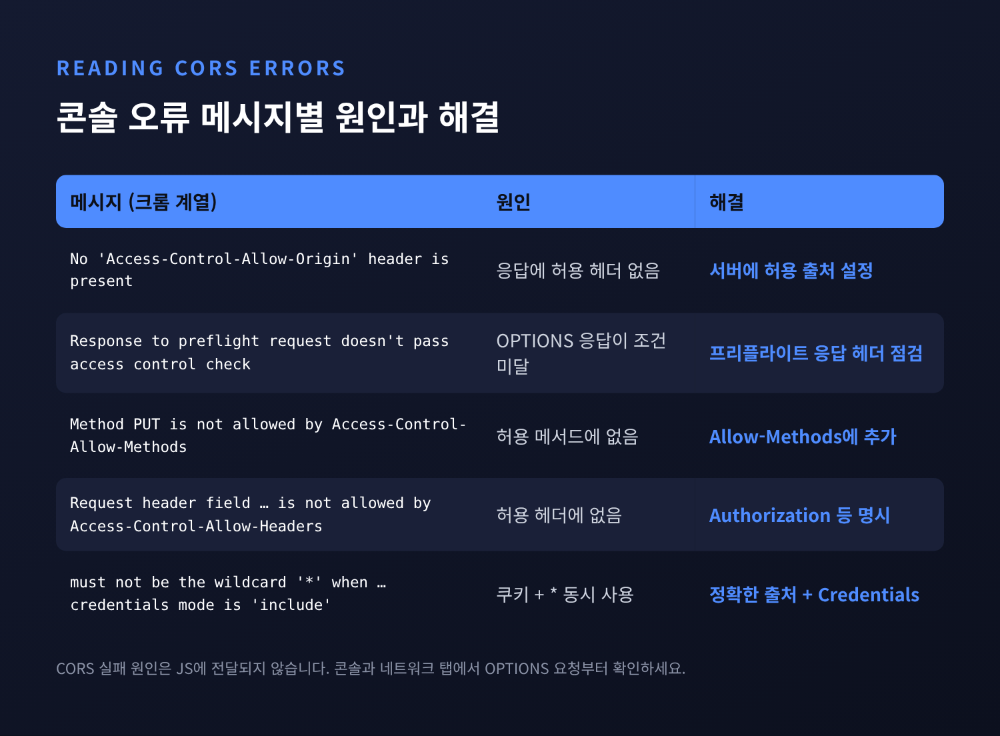

CORS와 동일 출처 정책 — 브라우저는 왜 다른 출처의 응답을 막을까

이번 글에서는 웹 개발자라면 한 번쯤 콘솔에서 마주치는 CORS 오류를 정리해 보겠습니다. 동일 출처 정책이 무엇을 지키는지, CORS가 그 정책을 어떻게 풀어 주는지, 그리고 Spring에서는 어떻게 설정하는지까지 차례로 살펴봅니다.
먼저 세 줄로 요약하면 이렇습니다.
- 동일 출처 정책은 다른 출처의 응답을 스크립트가 읽는 것을 막습니다. 요청 전송 자체를 막는 장치는 아닙니다.
- CORS는 서버가 "이 출처에는 응답을 보여줘도 된다"고 브라우저에 알려 주는 허가 절차입니다.
- 그래서 CORS 오류는 프런트엔드 코드가 아니라 서버의 응답 헤더로 고치는 것이 정석입니다.
■ 출처(origin)란 정확히 무엇인가
출처는 URL 전체가 아닙니다. scheme(프로토콜), host, port 세 가지의 조합입니다. MDN은 두 URL의 프로토콜, 포트, 호스트가 모두 같을 때만 '동일 출처'라고 정의합니다.
경로는 따지지 않습니다.
http://store.company.com/dir/page.html을 기준으로 보면, /dir2/other.html처럼 경로만 다른 주소는 같은 출처입니다.
반면 https://로 바뀌면 프로토콜이 달라 다른 출처가 됩니다.
:81 포트를 붙여도 다른 출처입니다. http의 기본 포트가 80이기 때문입니다.
news.company.com처럼 서브도메인만 달라도 호스트가 다르니 역시 다른 출처입니다.

실무에서 자주 헷갈리는 경우가 바로 로컬 개발 환경입니다.
localhost:3000의 프런트엔드가 localhost:8080의 API를 부르면, 호스트는 같아도 포트가 달라 교차 출처 요청이 됩니다.
HTML 파일을 더블클릭해 file:///로 열었을 때도 마찬가지입니다.
현대 브라우저는 이런 파일의 출처를 보통 '불투명 출처(opaque origin)'로 취급합니다. 같은 폴더의 파일을 불러와도 CORS 오류가 날 수 있습니다.
■ 브라우저는 무엇을, 왜 막는가
동일 출처 정책(Same-Origin Policy)이 막는 것은 생각보다 좁습니다. MDN은 교차 출처 상호작용을 세 가지로 나눕니다.
- 쓰기: 링크 이동, 리다이렉트, 폼 제출. 대체로 허용됩니다.
- 임베드:
<img>,<script src>,<link rel="stylesheet">,<iframe>, 웹 폰트. 대체로 허용됩니다. - 읽기: 다른 출처의 응답 내용을 스크립트로 읽는 것. 대체로 금지됩니다.
web.dev의 표현을 빌리면 "교차 출처 리소스를 삽입하는 것은 허용되지만, 읽는 것은 차단된다"는 원칙입니다.
왜 하필 읽기일까요. 브라우저는 여러 사이트를 동시에 열어 두고, 요청을 보낼 때 그 사이트의 쿠키를 함께 실어 보낼 수 있습니다. 만약 아무 제한이 없다면 어떻게 될까요. 사용자가 어떤 서비스에 로그인한 채로 낯선 페이지를 열었을 때, 그 페이지의 스크립트가 로그인된 서비스로 요청을 보내고 응답까지 읽어 갈 수 있습니다. 사용자의 세션을 빌려 개인 정보를 그대로 가져가는 셈입니다. 동일 출처 정책은 이 '응답 읽기'를 끊어서 데이터 탈취를 막습니다.
여기서 한 가지를 분명히 해 두어야 합니다. 요청이 서버에 도달하는 것까지 막지는 않는다는 점입니다. 폼 제출 같은 쓰기는 여전히 허용되기 때문에, 다른 사이트가 사용자의 쿠키를 실은 요청을 몰래 보내게 만드는 CSRF(사이트 간 요청 위조)는 동일 출처 정책만으로 막을 수 없습니다. MDN이 교차 출처 쓰기를 막으려면 추측할 수 없는 CSRF 토큰을 검사하라고 따로 안내하는 이유입니다.
■ CORS의 기본 흐름
CORS(Cross-Origin Resource Sharing)는 이 정책에 예외를 여는 방법입니다. 핵심은 서버의 명시적 동의입니다.
흐름은 단순합니다.
브라우저가 교차 출처 요청에 Origin 헤더를 자동으로 붙입니다.
서버는 허용할 출처라면 응답에 Access-Control-Allow-Origin 헤더를 담아 돌려줍니다.
브라우저는 이 헤더를 확인한 뒤에야 응답을 페이지의 스크립트에 넘깁니다.
Origin은 개발자가 직접 설정하는 헤더가 아닙니다. 브라우저가 알아서 붙이며, 상황에 따라 null이 들어가기도 합니다.
CORS 요청은 다시 두 갈래로 나뉩니다. 바로 보내는 단순 요청과, 미리 허락을 구하는 프리플라이트 요청입니다.
■ 단순 요청과 프리플라이트(OPTIONS)
MDN 기준으로 단순 요청이 되려면 아래 조건을 모두 만족해야 합니다.
- 메서드가
GET,HEAD,POST중 하나 - 직접 설정한 헤더가 CORS 허용 목록에 속할 것:
Accept,Accept-Language,Content-Language,Content-Type,Range(단일 범위일 때) Content-Type이application/x-www-form-urlencoded,multipart/form-data,text/plain중 하나- 허용 목록 헤더라도 값 길이는 128을 넘지 않을 것
조건을 보면 하나가 눈에 띕니다.
application/json으로 POST하는 순간 단순 요청이 아닙니다.
Authorization 헤더에 토큰을 실어도 마찬가지입니다.
오늘날 대부분의 API 호출이 프리플라이트를 거치는 이유가 여기에 있습니다.
단순 요청은 곧바로 서버로 갑니다. 서버는 요청을 처리하고 응답을 돌려줍니다. 다만 응답에 허용 헤더가 없으면, 브라우저가 그 응답을 스크립트에 넘기지 않을 뿐입니다.
프리플라이트는 순서가 다릅니다.
브라우저가 먼저 OPTIONS 메서드로 "이런 요청을 보내도 되겠습니까"라고 묻습니다.
서버가 허락해야 실제 요청이 출발합니다.
MDN의 예시를 옮기면 다음과 같습니다.
OPTIONS /doc HTTP/1.1
Host: bar.other
Origin: https://foo.example
Access-Control-Request-Method: POST
Access-Control-Request-Headers: content-type,x-pingother
HTTP/1.1 204 No Content
Access-Control-Allow-Origin: https://foo.example
Access-Control-Allow-Methods: POST, GET, OPTIONS
Access-Control-Allow-Headers: X-PINGOTHER, Content-Type
Access-Control-Max-Age: 86400
Access-Control-Request-* 헤더는 이 사전 질의에만 붙고 실제 요청에는 붙지 않습니다.
또 하나 기억할 점이 있습니다.
프리플라이트 요청에는 쿠키 같은 자격 증명이 절대 실리지 않습니다.
뒤에서 다룰 Spring Security 설정의 함정이 바로 여기서 생깁니다.

■ 꼭 알아야 할 응답 헤더
CORS 설정은 결국 몇 개의 응답 헤더를 정확히 채우는 일입니다.
- Access-Control-Allow-Origin: 허용할 출처 하나, 또는
*. 쉼표로 여러 출처를 나열할 수 없습니다. - Access-Control-Allow-Methods: 프리플라이트 응답에서 허용 메서드를 알립니다.
- Access-Control-Allow-Headers: 실제 요청에 써도 되는 헤더 목록입니다.
- Access-Control-Allow-Credentials:
true여야 쿠키를 실은 요청의 응답을 스크립트가 읽을 수 있습니다. - Access-Control-Expose-Headers: 스크립트가 읽을 수 있는 응답 헤더를 늘립니다.
- Access-Control-Max-Age: 프리플라이트 결과를 몇 초 동안 캐시할지 정합니다.

몇 가지는 숫자와 함께 기억해 두시길 권합니다.
Access-Control-Max-Age의 기본값은 5초입니다.
값을 크게 줘도 브라우저마다 상한이 있습니다. MDN에 따르면 Firefox는 24시간(86400초), Chromium은 v76부터 2시간(7200초)입니다. v76 이전에는 10분이었습니다.
86400을 넣어도 크롬에서는 2시간마다 다시 묻는다는 뜻입니다.
허용 출처가 여러 곳이라면, 서버가 요청의 Origin을 허용 목록과 비교해 일치하는 값 하나를 돌려주는 방식을 씁니다.
이때는 반드시 Vary: Origin을 함께 보내야 합니다.
출처에 따라 응답이 달라진다는 사실을 캐시에 알리는 헤더입니다.
PortSwigger는 이를 빠뜨리면 한 출처용으로 만든 응답이 캐시되어 엉뚱한 곳에 재사용되는 캐시 포이즈닝 위험이 있다고 지적합니다.
Access-Control-Allow-Headers: *도 만능이 아닙니다.
MDN은 Authorization 헤더는 와일드카드로 포함되지 않아 항상 이름을 명시해야 한다고 적고 있습니다.
■ credentials 모드와 와일드카드 금지 규칙
교차 출처 fetch()는 기본적으로 쿠키를 보내지 않습니다.
쿠키 기반 세션을 쓰려면 클라이언트와 서버 양쪽에서 문을 열어야 합니다.
fetch("https://api.example.com/me", { credentials: "include" });
서버는 응답에 Access-Control-Allow-Credentials: true를 넣어야 합니다.
그리고 이때부터 규칙이 엄격해집니다.
MDN은 자격 증명이 포함된 요청에 응답할 때 다음 네 헤더에 *를 쓰면 안 된다고 명시합니다.
Access-Control-Allow-OriginAccess-Control-Allow-HeadersAccess-Control-Allow-MethodsAccess-Control-Expose-Headers
Allow-Origin: *와 쿠키를 함께 쓰면 브라우저는 응답을 차단합니다.
그 응답에 담긴 Set-Cookie도 쿠키를 설정하지 않습니다.
'아무나 허용'과 '사용자 신원 공유'를 동시에 할 수는 없다는 설계입니다.

한계도 있습니다. 서버와 클라이언트를 모두 올바르게 설정해도 브라우저의 서드파티 쿠키 정책이 쿠키를 막을 수 있습니다. MDN은 이 정책이 서버나 클라이언트 설정과 무관하게 항상 적용된다고 설명합니다. 도메인이 완전히 다른 프런트엔드와 API를 쿠키로 엮는 구조라면, 이 점을 처음부터 고려하는 편이 좋겠습니다.
■ 흔한 오류 메시지 읽는 법
크롬 계열 브라우저는 보통 "Access to fetch at '…' from origin '…' has been blocked by CORS policy:" 뒤에 이유를 붙입니다.
Firefox는 "Cross-Origin Request Blocked: The Same Origin Policy disallows reading the remote resource at …" 뒤에 (Reason: …)을 덧붙입니다.

메시지별로 보면 원인이 꽤 분명합니다.
- No 'Access-Control-Allow-Origin' header is present: 응답에 허용 헤더가 없습니다. 서버 설정이 아예 없거나, 오류 응답에서 헤더가 빠진 경우가 많습니다.
- Response to preflight request doesn't pass access control check:
OPTIONS응답이 조건을 못 채웠습니다. 이때 실제 요청은 출발조차 하지 않습니다. - Method PUT is not allowed by Access-Control-Allow-Methods: 프리플라이트 응답의 허용 메서드에 PUT이 없습니다.
- Request header field … is not allowed by Access-Control-Allow-Headers: 커스텀 헤더나
Authorization이 허용 목록에 없습니다. - must not be the wildcard '*' when the request's credentials mode is 'include': 쿠키를 보내면서
*를 썼습니다. 정확한 출처를 적어야 합니다.
하나 더 알아 두면 디버깅이 빨라집니다.
MDN에 따르면 보안상 CORS 실패의 구체적 원인은 자바스크립트에 전달되지 않습니다.
코드에서는 그저 네트워크 오류로만 보입니다.
원인은 개발자 도구의 콘솔과 네트워크 탭에서 확인해야 합니다. 특히 OPTIONS 요청이 먼저 나갔는지부터 보시면 좋습니다.
■ "CORS가 서버를 지킨다"는 오해
가장 흔한 오해입니다. 처음에는 CORS를 서버 앞의 방화벽처럼 받아들이기 쉽습니다. 실제 역할은 정반대에 가깝습니다. CORS는 막는 장치가 아니라, 동일 출처 정책이 쳐 둔 울타리에 문을 내는 장치입니다.
근거는 여러 곳에서 확인됩니다.
- CORS를 집행하는 주체는 브라우저입니다. Sentry의 설명처럼 Postman은 CORS를 검사하지 않고, curl 같은 도구도 마찬가지입니다. 같은 요청이 Postman에서는 되고 브라우저에서만 실패하는 이유입니다.
- 단순 요청은 서버에 도달해 처리됩니다. 막히는 것은 응답 읽기뿐입니다.
- PortSwigger는 "CORS는 CSRF 같은 교차 출처 공격에 대한 보호책이 아니다", "민감한 데이터에 대한 서버 측 보호를 결코 대체하지 못한다"고 정리합니다.
오히려 CORS를 잘못 설정하면 그 자체가 취약점이 됩니다.
PortSwigger가 꼽은 대표 사례는 이렇습니다.
요청의 Origin을 검증 없이 그대로 반사하면서 credentials를 허용하는 설정, null 출처를 허용 목록에 넣는 설정, 도메인 접미사만 비교해 공격자가 등록한 비슷한 도메인까지 통과시키는 설정입니다.
PortSwigger는 Origin 반사를 "가장 흔한 CORS 취약점"으로 부릅니다.
CSRF 방어는 별도로 챙겨야 합니다.
OWASP는 폼 제출 같은 단순 요청이 프리플라이트 없이 어느 출처로든 전송될 수 있어 CSRF 위험을 만든다고 설명합니다.
CSRF 토큰, SameSite 쿠키, Sec-Fetch-Site 같은 Fetch Metadata 검사를 함께 쓰는 것이 권장됩니다.
SameSite도 브라우저마다 기본값이 다릅니다. OWASP에 따르면 Chromium 계열만 속성이 없는 쿠키를 Lax로 취급합니다.
■ 프록시 우회, 써도 될까
개발 서버의 프록시 기능으로 CORS 오류를 피하는 방법도 많이 씁니다. 프런트엔드와 같은 출처의 서버가 대신 API를 호출하니, 브라우저 입장에서는 교차 출처 요청이 아니게 됩니다.
이 방법이 통한다는 사실이 곧 앞의 오해에 대한 답이기도 합니다. 서버끼리의 통신에는 CORS가 끼어들지 않습니다.
개발 단계에서 프록시는 충분히 합리적인 선택입니다.
다만 HTTP Toolkit의 설명처럼 프록시를 거치면 사용자의 쿠키가 원래 대상 서버로 전달되지 않고, 대상 서버가 프록시 서버에서 접근 가능해야 한다는 제약이 있습니다.
운영 환경까지 같은 구조로 갈 것이 아니라면, 결국 API 서버에서 CORS를 제대로 설정하는 것이 근본 해결입니다.
mode: 'no-cors'도 해결책이 아닙니다. 응답을 읽지 않고 보내기만 할 때만 의미가 있습니다.
■ Spring에서 CORS 설정하기
Spring MVC는 CORS를 내장 지원합니다. 공식 문서에 따르면 프리플라이트는 HandlerMapping 단계에서 직접 처리되고, 일치하는 CORS 설정이 없으면 응답에 CORS 헤더가 붙지 않아 브라우저가 거부합니다.
1) 컨트롤러 단위: @CrossOrigin
@CrossOrigin(origins = "https://domain2.com", maxAge = 3600)
@RestController
@RequestMapping("/account")
public class AccountController {
// ...
}
@CrossOrigin의 기본값은 모든 출처, 모든 헤더, 매핑된 모든 메서드 허용이고 maxAge는 30분입니다.
allowCredentials는 기본적으로 꺼져 있습니다. 쿠키나 CSRF 토큰 같은 민감한 정보를 노출할 수 있는 신뢰 수준이기 때문이라고 문서는 설명합니다.
2) 전역 설정: WebMvcConfigurer
@Configuration
public class WebConfiguration implements WebMvcConfigurer {
@Override
public void addCorsMappings(CorsRegistry registry) {
registry.addMapping("/api/**")
.allowedOrigins("https://domain1.com", "https://domain2.com")
.allowedMethods("GET", "PUT")
.allowedHeaders("Authorization", "Content-Type")
.allowCredentials(true)
.maxAge(3600);
}
}
전역 설정을 쓰면 기본 허용 메서드는 GET, HEAD, POST뿐입니다. PUT이나 DELETE를 쓴다면 직접 추가해야 합니다.
allowCredentials(true)와 allowedOrigins("*")는 함께 쓸 수 없습니다. 출처가 동적으로 많다면 allowedOriginPatterns를 쓰는데, 모든 서브도메인을 열어 두면 그중 하나만 뚫려도 신뢰 관계가 무너진다는 점을 함께 고려해야 합니다.
전역과 로컬 설정은 대체로 합쳐지고, allowCredentials와 maxAge처럼 값이 하나인 속성은 로컬 설정이 우선합니다.
3) Spring Security와 함께 쓸 때: CorsConfigurationSource
Spring Security를 쓰면 함정이 하나 있습니다.
Spring Security 문서는 "프리플라이트 요청에는 쿠키(JSESSIONID)가 없으므로 CORS는 Spring Security보다 먼저 처리되어야 한다"고 설명합니다.
인증 필터가 먼저 돌면 프리플라이트를 미인증 요청으로 보고 거부해 버립니다.
그래서 http.cors()로 보안 필터 체인 안에서 CORS를 처리하게 합니다.
@Bean
public SecurityFilterChain filterChain(HttpSecurity http) throws Exception {
http
.cors(withDefaults())
// ... 인가 규칙 등 기존 설정
;
return http.build();
}
@Bean
UrlBasedCorsConfigurationSource corsConfigurationSource() {
CorsConfiguration configuration = new CorsConfiguration();
configuration.setAllowedOrigins(List.of("https://example.com"));
configuration.setAllowedMethods(List.of("GET", "POST"));
configuration.setAllowedHeaders(List.of("Authorization", "Content-Type"));
configuration.setAllowCredentials(true);
UrlBasedCorsConfigurationSource source = new UrlBasedCorsConfigurationSource();
source.registerCorsConfiguration("/**", configuration);
return source;
}
CorsConfigurationSource를 따로 두지 않으면 Spring Security는 Spring MVC의 CORS 설정을 가져다 씁니다.
반대로 CorsConfigurationSource 빈이 여러 개면 어느 것을 쓸지 정하지 못해 자동 구성을 하지 않습니다.
.cors(CorsConfigurer::disable)로 끄는 것은 Spring Security의 CORS 지원을 끄는 것이지 브라우저의 보호를 끄는 것이 아니라는 점도 문서에 명시되어 있습니다. 그 결과는 브라우저 클라이언트가 백엔드에 닿지 못하는 상태일 뿐입니다.
정리하면 이렇습니다. 동일 출처 정책은 로그인된 사용자의 응답을 낯선 페이지가 읽어 가지 못하게 하는 브라우저의 기본 방어선입니다. CORS는 서버가 그 방어선에 필요한 만큼만 문을 내는 절차이고, 문을 넓게 열수록 책임도 서버가 집니다.
"CORS는 서버를 지키는 벽이 아니라, 서버가 브라우저에 건네는 허가서"입니다.
다음에 콘솔에 빨간 CORS 오류가 뜬다면 어디부터 보겠느냐고 물으신다면, 네트워크 탭의 OPTIONS 요청과 응답 헤더부터 열어 보겠다고 답하겠습니다.
참고 자료
- MDN — Cross-Origin Resource Sharing (CORS)
- MDN — Same-origin policy
- MDN — Access-Control-Max-Age
- MDN — CORS errors
- web.dev — Same-origin policy
- Spring Framework — CORS
- Spring Security — CORS
- PortSwigger — CORS
- OWASP — CSRF Prevention Cheat Sheet
#CORS #동일출처정책 #SameOriginPolicy #프리플라이트 #AccessControlAllowOrigin #SpringSecurity #웹보안 #프런트엔드